CowxCode is an open source AI coding agent that runs locally on your Windows machine and talks to any LLM provider. Build, refactor and understand code with a polished desktop interface.
Powerful where it counts, quiet everywhere else. CowxCode stays out of your way and gets the work done.
Wire up OpenAI, Anthropic, Google, Mistral, Groq, xAI, Perplexity, OpenRouter, DeepSeek, Ollama, LM Studio or any OpenAI-compatible endpoint. Your keys, your choice.
Read, write, list, search and run commands against your project folder. The model acts, not just talks.
A polished Electron desktop app with a custom title bar and native Windows theme. No terminal required.
Your config is stored only in your user data folder. Nothing is sent anywhere but your chosen provider.
MIT licensed. Read it, fork it, ship it. Built by the community, for the community.
A tiny, dependency-free core engine you can embed, script or extend with your own tools.
CowxCode drives a tight loop: you ask, it reasons, it calls a tool, it reports back — until the job is done.
Type a plain-language request in the chat. Pick your project folder.
The agent streams a plan, calls tools and edits files with full visibility of every step.
Review the changes in your editor. New session whenever you want.
A tight agent loop — from your words to real file changes.
Type anything — "explain this project", "write a login function", "find all bugs". The agent receives your message with a system prompt that defines its tools.
Your configured provider (OpenAI, Anthropic, etc.) streams text back. When it needs to act, it emits a tool call as JSON inside a fenced block.
The engine picks up the JSON tool call, runs it against your real project folder (reads/writes files, runs commands, searches), and feeds the result back to the model.
The model gets the tool result and can call more tools, or deliver a final answer. This continues up to 12 tool rounds per message — then it stops safely.
Everything you might wonder about CowxCode.